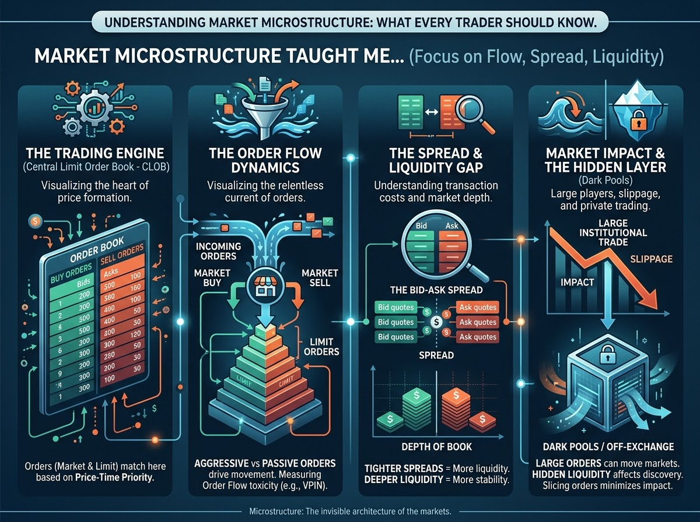
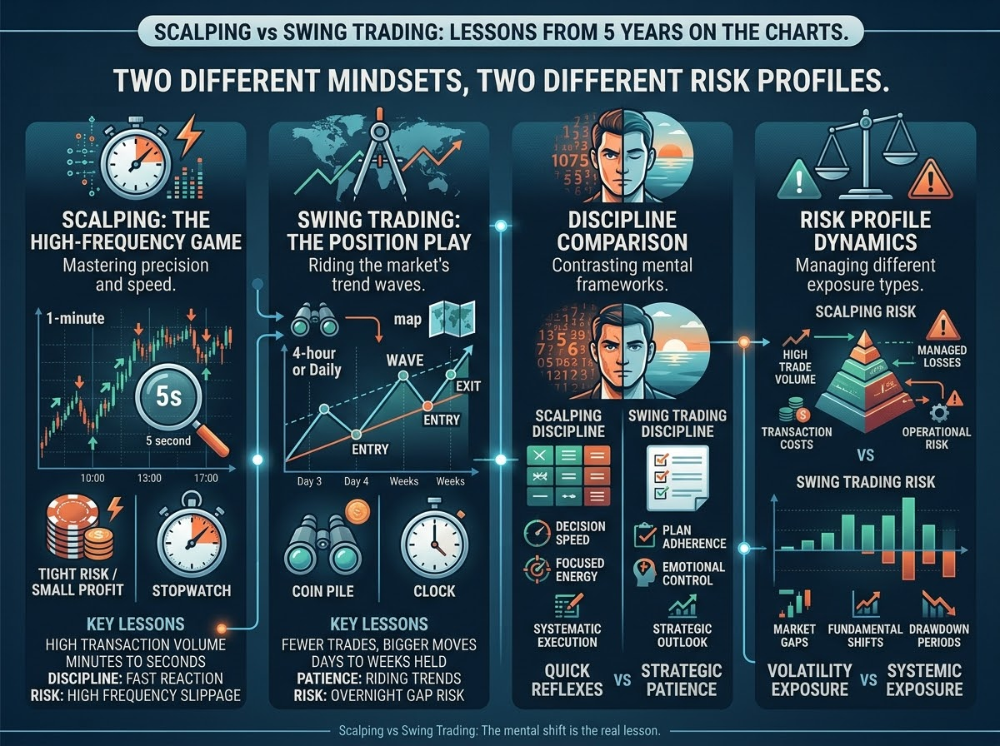
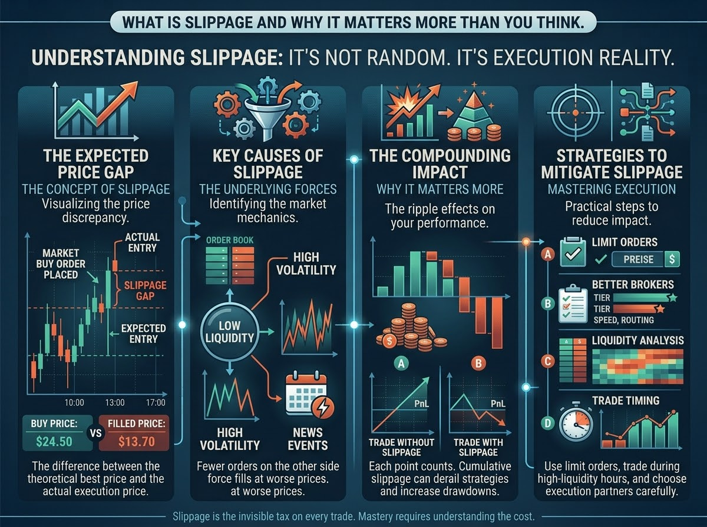
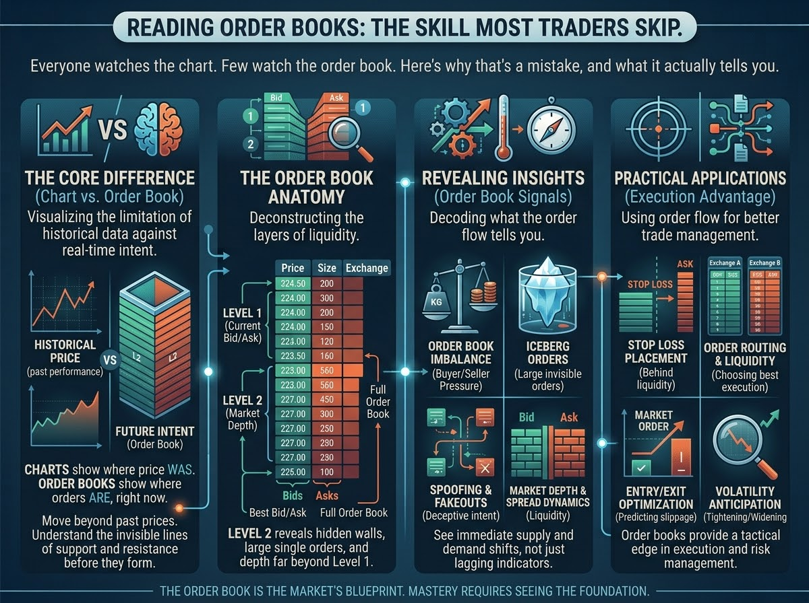
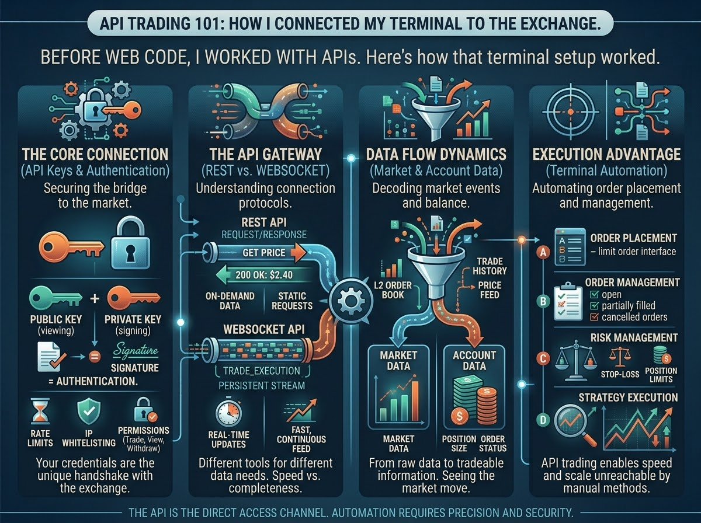
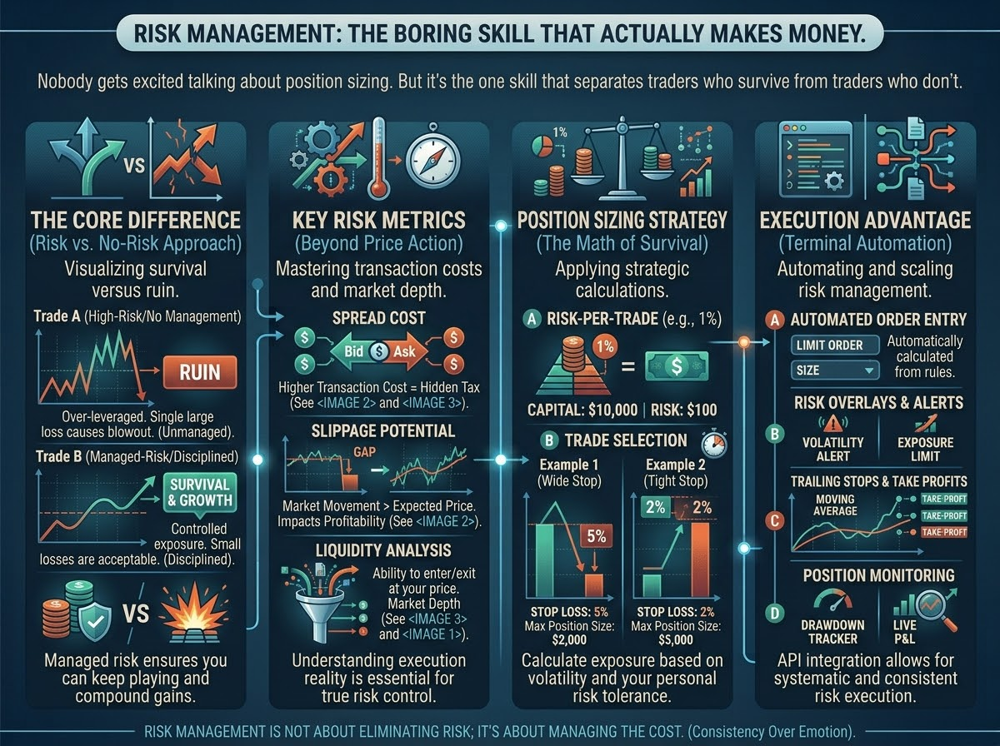

Understanding Market Microstructure: What Every Trader Should Know
Most traders focus on price action and ignore what's happening underneath — the order flow,
the spreads, the liquidity. Here's what microstructure taught me about markets.

Scalping vs Swing Trading: Lessons from 5 Years on the Charts
Two completely different mindsets, two completely different risk profiles.
I've done both — here's what each one taught me about discipline and patience.

What is Slippage and Why It Matters More Than You Think
That gap between the price you expected and the price you got isn't random.
Understanding slippage changed how I think about execution

Reading Order Books: The Skill Most Traders Skip
Everyone watches the chart. Few watch the order book.
Here's why that's a mistake, and what it actually tells you.

API Trading 101: How I Connected My Terminal to the Exchange
Before I ever wrote a line of code for the web, I was already working with APIs — just from the trading side.
Here's how that terminal setup worked.

Risk Management: The Boring Skill That Actually Makes Money
Nobody gets excited talking about position sizing.
But it's the one skill that separates traders who survive from traders who don't.